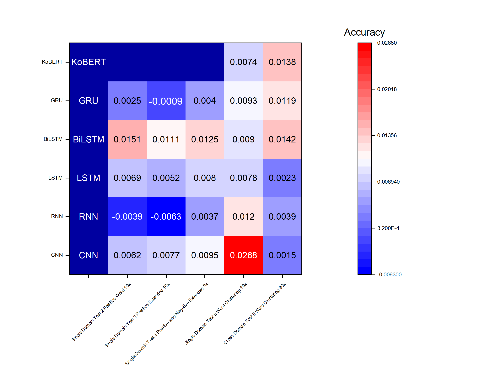
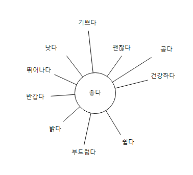
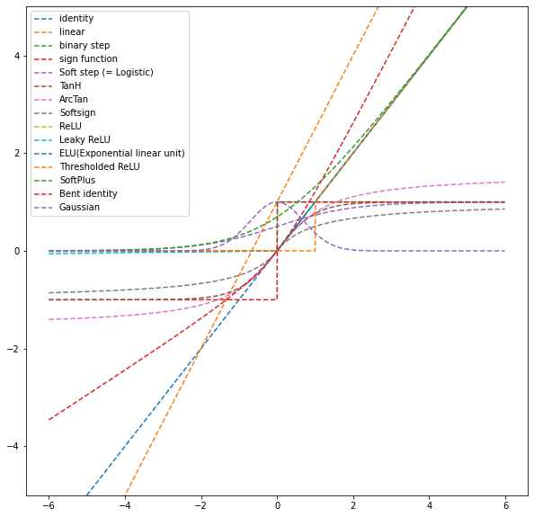
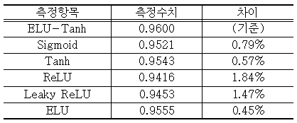

데이터와 활성함수, 두 개의 작은 지렛대
신경망의 성능은 모델을 키워야만 오르는 것이 아니다. 학습데이터를 유의어 군집으로 늘리는 일과, 활성함수를 비대칭으로 조합하는 일 — 크기를 건드리지 않고도 결과를 밀어 올리는 두 개의 작은 지렛대가 있다.

작은 지렛대의 힘
신경망의 성능이 아쉬울 때, 가장 먼저 떠오르는 처방은 대개 ‘더 크게’다. 층을 더 쌓고, 파라미터를 더 늘리고, 더 무거운 사전학습 모델로 갈아탄다. 이 방향은 분명 효과가 있지만, 가장 비싸고 가장 게으른 해법이기도 하다. 연산 비용은 크기에 따라 가파르게 오르는데, 정확도의 이득은 어느 지점부터 완만해진다. 그래서 나는 모델을 키우기 전에 늘 두 가지를 먼저 묻는다. 데이터를 더 잘 쓸 방법은 없는가, 그리고 네트워크 안쪽의 작은 부품을 바꿀 여지는 없는가.
이 두 질문은 사소해 보이지만, 실은 성능에 ‘곱하기’로 작동하는 지점을 겨눈다. 학습데이터는 모든 학습 단계에 스며들고, 활성함수는 모든 뉴런의 출력을 한 번씩 통과한다. 전체 파이프라인에 반복적으로 개입하는 요소일수록, 아주 작은 개선이라도 누적되면 무시할 수 없는 차이를 만든다. 이 글은 내가 주저자로 수행한 두 편의 연구를 통해, 이 ‘작은 지렛대’ 두 개가 실제로 얼마나 움직였는지를 기록한다.
한쪽은 데이터를 늘리는 법이다. 학습 문장에 등장하는 단어를 표준국어대사전의 유의어로 그룹 단위 확장해, 같은 데이터에서 더 풍부한 표현 변이를 만들어 낸다. 다른 한쪽은 아키텍처를 바꾸는 법이다. 층마다 서로 다른 활성함수를 비대칭으로 조합해, 깊은 신경망의 고질병인 기울기 소실을 완화한다. 접근은 다르지만 철학은 하나다 — 크기가 아니라 구성으로 성능을 얻는다.
Chapter 2. 데이터를 늘리는 법유의어 군집으로 학습데이터를 확장하다
자연어 처리에서 데이터 증강은 늘 미묘한 문제를 안고 있다. 이미지라면 뒤집고 자르고 밝기를 바꿔도 ‘고양이’는 여전히 고양이지만, 문장은 단어 하나만 바꿔도 뜻이 어긋나기 쉽다. 무작위 치환이나 삭제 같은 거친 증강이 한국어에서 특히 위험한 이유다. 그래서 나는 언어의 의미 구조를 존중하는 증강을 택했다. 국립국어원 표준국어대사전에 등재된 유의어 관계를 근거로, 단어를 의미가 가까운 후보들로 치환하는 것이다.
핵심은 개별 단어를 하나씩 바꾸는 대신 단어를 그룹(word cluster) 단위로 확장했다는 점이다. 한 단어를 그와 유의 관계에 있는 단어들의 묶음으로 보고, 학습 문장 안에서 그 묶음을 오가며 표현 변이를 생성한다. 이렇게 하면 원문의 의미는 유지한 채, 모델이 같은 개념의 여러 표면형(surface form)을 학습하게 된다. 사전이라는 검증된 지식 자원에 뿌리를 두므로, 증강된 문장이 엉뚱한 의미로 튀는 위험도 낮다.

검증은 최대한 넓게 설계했다. 어느 특정 구조에서만 통하는 요행이 아님을 보이기 위해, 표현 계열이 다른 여러 아키텍처를 나란히 세웠다. 합성곱 계열의 CNN, 순환신경망 계열의 RNN·LSTM·BiLSTM·GRU, 그리고 사전학습 트랜스포머인 KoBERT까지 — 데이터 조건과 하이퍼파라미터를 교차해 총 108개의 실험 모델을 구성하고, 증강 전후의 정확도를 조건별로 비교했다.
어디서, 얼마나 올랐는가
결과는 아키텍처 계열에 따라 뚜렷이 갈렸다. 순환신경망 계열에서 유의어 군집 확장의 효과가 가장 안정적으로 나타났다. 성능은 평균 0.75%포인트 향상되었고, 조건에 따라 최대 2.68%포인트까지 올랐다. 표현이 시간 축을 따라 순차적으로 쌓이는 순환 구조에서, 같은 의미의 다양한 표면형을 학습한 것이 문맥 일반화에 특히 도움이 되었다고 해석한다.
| 항목 | 내용 |
|---|---|
| 증강 근거 | 표준국어대사전 유의어 관계 (그룹 단위 확장) |
| 실험 모델 수 | 총 108개 (CNN · RNN · LSTM · BiLSTM · GRU · KoBERT) |
| 순환신경망 평균 향상 | +0.75%포인트 |
| 최대 향상 | +2.68%포인트 |
절댓값만 보면 0.75%포인트는 소박해 보일 수 있다. 그러나 이 이득의 성격을 짚어야 한다. 첫째, 새 데이터를 수집하지 않고 이미 가진 데이터에서 얻은 이득이다. 라벨링 비용이 0이라는 뜻이다. 둘째, 모델 크기·구조를 그대로 둔 채 얻은 이득이므로, 다른 개선 기법과 중첩해서 쌓을 수 있다. 위 히트맵이 보여주듯 효과의 크기는 아키텍처와 조건에 따라 달라지지만, 방향은 대체로 일관되게 양(+)이었다. 공짜에 가까운 지렛대가 대개 이런 모습이다 — 극적이지 않지만 거의 언제나 도움이 된다.
주의할 점도 분명하다. 이 방법은 유의어 자원이 잘 갖춰진 언어와 도메인에서 강하다. 사전에 등재되지 않은 신조어·전문용어·고유명사가 많은 텍스트에서는 확장할 후보 자체가 적어 효과가 제한된다. 또한 다의어를 문맥 없이 치환하면 오히려 잡음이 될 수 있어, 확장은 언제나 원문 의미의 보존을 상한으로 두어야 한다.
Chapter 4. 활성함수를 바꾸는 법ELU·Tanh 비대칭 조합과 기울기 소실
두 번째 지렛대는 데이터 바깥, 네트워크 안쪽에 있다. 깊은 신경망을 학습할 때 가장 흔히 마주치는 벽이 기울기 소실(Vanishing Gradient)이다. 역전파로 오차 신호가 앞쪽 층으로 전달될 때, 활성함수의 기울기가 작으면 곱해질수록 신호가 급격히 0에 수렴한다. 그 결과 입력에 가까운 층은 사실상 학습이 멈춘다. 활성함수의 모양이 곧 학습 신호의 생사를 가르는 셈이다.
전통적으로 쓰인 로지스틱(Sigmoid)과 Tanh는 출력이 포화되는 양 끝에서 기울기가 거의 0이 되어 이 문제에 취약하다. 반대로 지수 선형 단위(ELU)는 양수 구간에서 항등에 가깝게 기울기를 살리고, 음수 구간에서는 부드럽게 포화하며 출력 평균을 0 근처로 밀어 학습을 안정화한다. 나는 여기서 한 걸음 더 나아가, 층마다 서로 다른 활성함수를 ‘비대칭으로 조합’하는 방식을 실험했다. 모든 층에 같은 함수를 쓰는 대신, ELU와 로지스틱·Tanh를 층 위치에 따라 섞어 각 함수의 장점이 다른 함수의 약점을 보완하도록 배치한 것이다.
발상의 핵심은 ‘하나의 최적 활성함수’를 찾는 게임을 그만두는 데 있다. 어떤 층은 신호를 넓게 통과시키는 것이 유리하고, 어떤 층은 출력을 부드럽게 눌러 주는 것이 유리하다. 층마다 요구가 다르다면, 층마다 다른 함수를 쓰는 것이 자연스럽다. 비대칭 조합은 그 직관을 설계로 옮긴 것이다.
Chapter 5. 결과+1.024%포인트, 그리고 ELU-Tanh
여러 조합을 체계적으로 비교한 결과, 비대칭 조합은 단일 활성함수를 쓴 기준선 대비 평균 1.024%포인트의 개선을 보였다. 그중 ELU-Tanh 조합이 정확도 0.9600으로 가장 좋았다. ELU가 앞단에서 기울기를 넉넉히 살려 학습 신호를 앞쪽 층까지 실어 나르고, Tanh가 뒤이어 출력을 0 중심으로 부드럽게 정돈하는 역할 분담이 잘 맞아떨어진 결과로 읽힌다.

| 구성 | 성격 | 정확도 |
|---|---|---|
| 단일 활성함수 (기준선) | 모든 층 동일 함수 | 기준 |
| 비대칭 조합 (평균) | 층별 상이 함수 혼합 | +1.024%p |
| ELU-Tanh 조합 | 최고 성능 구성 | 0.9600 |

이 결과의 매력도 앞선 데이터 증강과 닮았다. 파라미터 수를 늘리지 않고, 오직 구성 요소의 배치를 바꿔서 얻은 이득이라는 점이다. 활성함수는 학습 가능한 가중치가 아니라 설계 선택이므로, 추가 연산 비용이 거의 없이 정확도만 밀어 올린다. 다만 최적 조합은 과제·데이터·깊이에 따라 달라질 수 있어, ‘ELU-Tanh가 언제나 정답’이라기보다 ‘비대칭 조합이라는 탐색 공간이 열려 있다’로 받아들이는 편이 정확하다.
맺음말크기가 아니라 구성으로
두 연구는 서로 다른 지점을 건드렸지만 같은 결론을 가리킨다. 유의어 군집 확장은 데이터 쪽에서, 비대칭 활성함수 조합은 아키텍처 쪽에서, 각각 모델의 크기를 그대로 둔 채 성능을 밀어 올렸다. 향상 폭은 각각 최대 2.68%포인트, 평균 1.024%포인트로 극적이지 않다. 그러나 이런 이득은 라벨링 비용도, 연산 비용도 거의 요구하지 않으며, 서로 그리고 다른 개선 기법과 겹쳐 쌓을 수 있다는 데 진짜 가치가 있다.
더 큰 모델은 언제나 유혹적이다. 하지만 성능이라는 결과에 곱셈으로 작동하는 지점 — 모든 학습 단계에 스며드는 데이터, 모든 뉴런을 통과하는 활성함수 — 을 먼저 다듬는 것이 공학적으로 더 정직하고 대개 더 경제적이다. 모델을 키우는 결정은, 이 작은 지렛대들을 모두 당겨 본 뒤에 내려도 늦지 않다.
참고
- 박대승 외, “단어그룹 확장 기법을 이용한 학습데이터 증강이 신경망 알고리즘 성능에 미치는 영향,” 산업융합연구, 대한산업경영학회, 제20권 제4호, 2022. DOI: 10.22678/jic.2022.20.4.023.
- 박대승 외, 지수 선형 단위(ELU)와 로지스틱·Tanh의 비대칭 조합 활성함수를 통한 기울기 소실 완화에 관한 연구 (국내학회 발표, 주저자).
- 본문의 수치(평균 +0.75%p·최대 +2.68%p, 평균 +1.024%p, ELU-Tanh 0.9600, 108개 실험 모델)는 위 연구의 보고값이며, 구체적 값은 과제·데이터·평가 조건에 따라 달라질 수 있다.